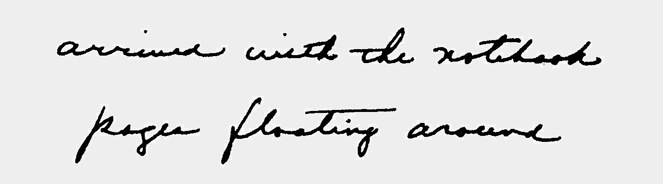
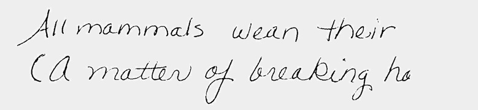
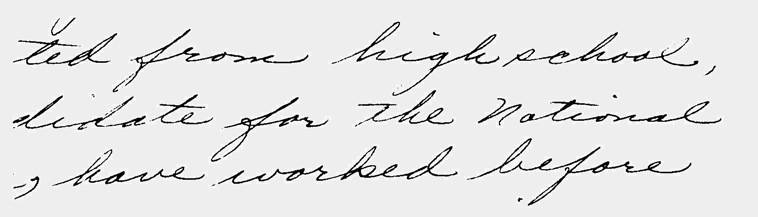
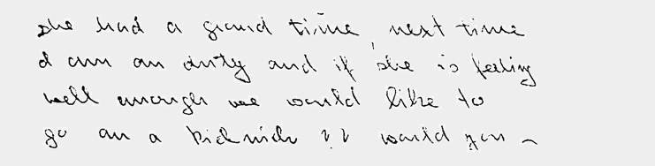
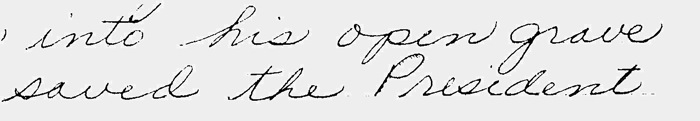

Eldene Whiting wrote a fantastic book called Traitsmatch that helps people understand their "Occupational Personality" through handwriting analysis. Take a few minutes and give it a try to see what your writing tells you about the kinds of jobs that would be a perfect match for you! Here, with Eldene's permission, is an excerpt from her book .
Chapter 11
TRAITMATCH YOURSELF INTO YOUR DREAM JOB!
Are you presently out of work, or hopping from job to frus-
trating job? Or are you dissatisfied with your present position,
hardly able to bear another hour of the daily grind? Still search-
ing for your happy niche in life? Then take a close look at your
own handwriting and make your dream job a reality!
It truly takes all kinds of people to make up this big, beautiful
world, and even in times of high unemployment so much op-
portunity is available. It's a shame so many are caged up in an
occupation they don't really want. One of the reasons is many
people take jobs because they need them to survive, not because
they want them. It's not long before such a person becomes a
corporate zombie, a member of the walking dread. He dreads
facing another work day but dreads the thought of being laid
off even more.
Some feel stuck behind a desk wishing they were out meeting
and mingling with people; others envy the convenient luxury of
a sit-down job or the security and seclusion of a tiny office, pro-
tected from the extremes of weather. Some yearn to travel.
Others are miserable because they can't put down roots.
The mere thought of changing jobs can be a little frightening.
Why should that be if you are considering alternatives for your
future happiness? For one thing, current job-hunting advice can
make your skin crawl. You can find mountains of information
on resume preparation, interview preparation, test preparation.
Warnings emanate from every corner, "Communicate the
proper image! Wear only the proper clothes. Act this way...
don't act that way. Say only the 'right' things, but say them only
in the 'right' way!'' One personnel director offered 233
questions for the applicant to practice prior to a hiring interview!
No wonder you may be a little nervous about returning to the
hiring hassle where you are expected to play your traditional
role and contribute to the deception game of the job interview.
Should you then actively pursue a job which will make your
life happier-a thought probably considered dangerous and
subversive to your spouse, friends, or casual acquaintances?
Yes! And vigorously! Here are some suggestions which have
helped many others and can help you, too.
Be Honest
Now that you understand the inner workings of the hiring
hassle, it doesn't mean you must continue to be a party to the
deception. By being yourself you can feel more relaxed and
confident than ever before. Your honesty will be an asset, a
pleasant and conspicuous difference to the interviewer. You
won't have to preprogram yourself to fit some graven image.
Remember that someone needs the unique combinations of
qualities only you possess-that special set of talents, traits,
skills, and yes, quirks and defects which exists nowhere else on
earth.
Realize your value, your true self-worth. Undiscovered for
now, maybe. But priceless nevertheless. When you polish the
jewel that is you with the self-esteem which springs from
self-knowledge, the glare will cause every employer to sit up and
take notice. Remember, if you aren't fully convinced of your
abilities, how are you going to convince anyone else?
Traitmatch Yourself
Now get to know yourself through your handwriting, really get
to know yourself! Your own analysis will not only help you to
verifywhatyou alreadyfeel istrue, itwill helpyou discoverother
things about yourself you may never have accepted otherwise.
Above all, don't be shy. Acknowledge the qualities you find.
Accept them as a part of your occupational personality. Humil-
ity, especially with a potential life-long career in the balance, is
a foolish virtue. Be proud of your talents! Shout about them to
the rooftops if you want!
But before you venture boldly out into the job-hunting circuit,
be sure your self-portrait is as complete as possible, graph-
ologically speaking. Recognize all aspects of yourself which
include your limitations as well. Be sure you're honest with
yourself. Don't let the idea scare you. If you find some changes
may be a good idea in order to enhance your occupational
personality, fine. But you-the you of today-is whom you want
to know better. You now have the method within your grasp. It's
an ink trail away!
1. Am I a down-to-earth person or do I have a more philosophi-
cal nature?
Examine your upper zone extensions and t-bar placements
"Down to earth" large MZ, open, low t bars
Large MZ indicates need for physical and emotional interaction.
Openness means you can work with others well. Lowtbarsshow
your practicality.

"Philosophical" High t cross, strong UZ loops
High t crosses indicate your more intangible goals. The open
UZ loops showyour imagination and "idea-oriented" capabilities.
2. Would I be happy in an occupation where I travel constantly,
or am I really a homebody who would settle for an occasional
weekend in Las Vegas or Miami Beach? Am I better suited
to work indoors or outdoors?
Check your writing size, expansion and lower loops.

"Outdoors" Large MZH, long, full LZ loops
Large MZH (again)show your need for physical space and ac-
tion. The developed LZ loops place your interests in tangible
things like nature, animals, machines, etc.
"Indoors" Small MZ, modest LZ loops
Small MZ indicates the person more interested in mental activ-
ities than purely physical or emotional. Modest LZ loops em-
phasize this more sedentary activity.
3. Am I at my best working with people, or would I work
better alone?
Traitmatch your slant and letter size.

"People oriented" Cursive, right slant
Cursive writing indicates the "feeling person." The right slant
reaches out "from me to thee."

"Solitary worker" Small writing, upright or left slant
Separated words, lines
Small MZH shows mental abilities. Upright or left slant reveals
the independence to work alone without supervision. The sep-
arated words and lines demand solitude and space.
4. Would I be more comfortable in a routine job, or one which
has the thrill of anticipation, not knowing what to expect
from day to day?

"Conventional" CB style
Round, cursive writing reveals the conventional person who
prefers to work in conservative, practical workfora good wage.
"Thrill of anticipation" Original, enthusiastic T s
Original looking writing means an original thinker. Long strong
t bars shows the enthusiasm and drive you will put into your work.
To go to Part 2 Click Here.
***Disclaimer - This information is intended as amusement only. The author and Hidden Creek Farm, Inc. hereby waive any liability associated with one's use of this information in performing such analysis on any handwriting sample.***Copyright 2004 Hidden Creek Farm, Inc. All rights reserved.